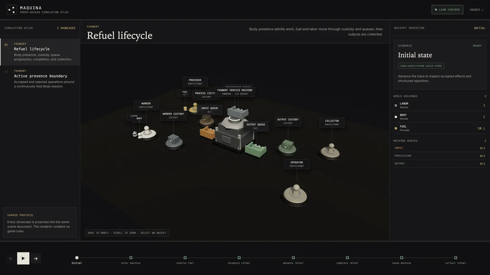
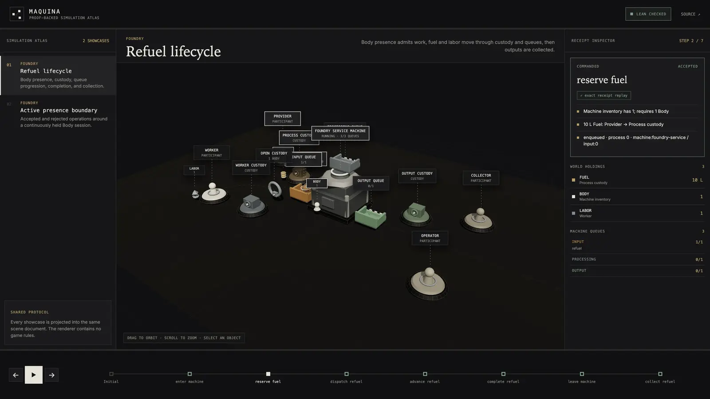
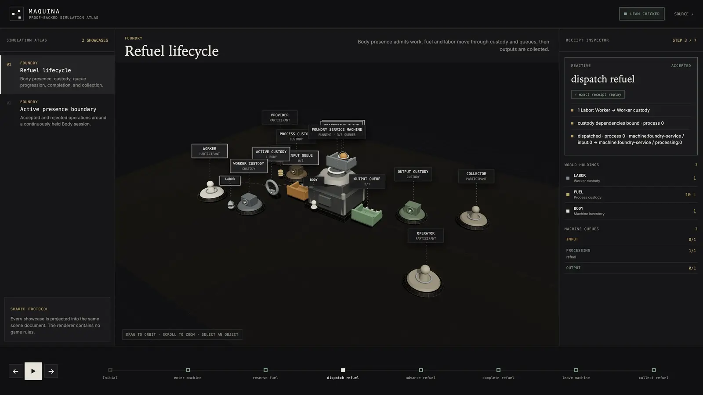

Maquina
Maquina is an execution model for simulated worlds. It defines what exists, which changes are allowed, and what each accepted change produces. A Lean 4 kernel checks every step, so any run can be replayed and verified. Agents, people, planners and solvers propose actions; Maquina decides whether each one is valid and what follows from it.

- Kernel
- Lean 4
- Viewer
- Three.js
- Showcases
- 7
- Started
- October 2025 article
Problem
When agents act in a simulated world, the rules are often spread across the agent, the game code and the renderer. Then nothing records why an action was allowed, and a run cannot be checked or reproduced. Maquina puts the rules in one kernel that every participant calls.
Design
State maps accounts and resources to quantities. An account is a person, agent, machine, location or scope. A resource is anything that can be held: a material, a unique artifact, a fact, a capability or a permission.
Rules declare required and preserved conditions, consumed inputs, produced outputs, actor bindings, capacity and timing constraints, and invariants. Operations change the condition of a machine or actor; processes turn inputs into outputs. Both are rules of this kind.
The Lean exporter writes state snapshots, accepted effects, structured rejections and replay provenance to a versioned trace. The Three.js Playground only draws that trace and contains no game rules.
Lean simulation → versioned trace → shared scene document → Three.js
Showcases
In command mode you pick orders, see why each candidate is accepted or rejected, rewind to any snapshot and compare outcomes.
- Operation Veiled Accord: imperfect-information strategy with public claims, verified evidence, escrow, hidden commitments and sealed simultaneous orders. The browser only sees what the commander can observe.
- Foundry: Night Shift: one operator runs two production orders across 95 checked snapshots. The shift ends with 0, 10 or 20 liters delivered; full production takes nine or ten decisions.
- Operation Nightglass: targeting-channel contention, convoy damage, repair and extraction, with mission command forks.
- Refuel lifecycle: custody, queue progression, completion and collection of fuel.


Background
The project started with my October 2025 article, Maquina: A Theory of Everything for Digital Twins, which proposed objects, operations and machines as primitives. Maquina now calls them resources, operations and processes, and machines with inventories and queues. It also draws on two earlier repositories, rozgo/maquina and rozgo/maquina-bevy, and on Axionomy.